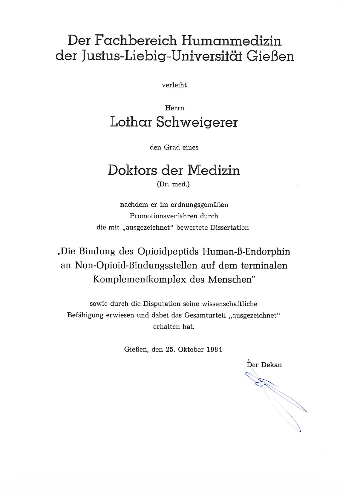

1980–1984
Sucharit gab mir etwas von seinem Komplement in einem kleinen Eppendorf-Gefäß. Ich nahm die Probe mit in unser Labor im siebten Stock und machte etwas denkbar Einfaches.
Wir verfügten über einen Versuchsansatz, mit dem sich β-Endorphin quantitativ bestimmen ließ. Vereinfacht gesagt wollte ich herausfinden, ob das Komplementsystem mit dem β-Endorphin wechselwirkte. Ich gab die Probe in die Versuchsröhrchen und wartete auf das Ergebnis. Und tatsächlich: Das Radiometer zeigte eine Veränderung. Das β-Endorphin hatte an Bestandteile des Komplementsystems gebunden.
Plötzlich war aus einer theoretischen Idee ein reales Ergebnis geworden. Es schien tatsächlich so zu sein, dass β-Endorphin nicht nur im Gehirn wirkte, sondern möglicherweise auch eine Funktion im Immunsystem hatte. Ich fand das spannend.
Sucharit fand es sensationell. Er nahm mich beiseite und sagte:
„Lothar, das wird eine Riesengeschichte. Das publizieren wir in Nature.“
Ich antwortete ungefähr so:
„Ja sicher. Ich hatte kurz ans Deutsche Ärzteblatt gedacht. Aber wir machen es so, wie du möchtest.“
Ich hatte damals keine Ahnung, was „Nature“ überhaupt war. „Nature“ war und ist eine der weltweit bedeutendsten wissenschaftlichen Zeitschriften. Dort erschienen Arbeiten, die wissenschaftliche Fachgebiete dauerhaft veränderten. Fast jeder Wissenschaftler träumt davon, einmal dort zu publizieren. Nur wenige schaffen es. Wir machten uns also an die Arbeit. Die eigentliche Entdeckung war vergleichsweise schnell gemacht. Deutlich schwieriger war es, daraus ein Manuskript zu machen.
Hansjörg war Perfektionist. Wir schrieben eine Fassung. Dann die nächste. Dann die nächste. Und dann noch eine. Und noch eine. Irgendwann hatte ich das Gefühl, wir würden uns im Kreis drehen. Hansjörg kämpfte um jedes Wort.
Überhaupt war er ein ungewöhnlicher Mensch. Er kochte morgens Kaffee und ließ die Kanne den ganzen Tag auf der Heizplatte stehen. Wenn man abends sein Büro betrat, roch es streng. So ähnlich wie Stinktiersekret. Auch seine Ernährung war speziell. Einmal bekam er spätabends Hunger. In seinem Büro fand sich nur noch eine Tafel Schokolade. Sie hatte den ganzen Tag in der Wärme gelegen und war mittlerweile halbflüssig. Das störte ihn nicht im Geringsten. Er nahm einen Löffel und löffelte die gesamte Schokolade aus der Verpackung. Für Hansjörg war das völlig normal. Für mich nicht.
Als schließlich die siebzehnte Manuskriptfassung zurückkam, hatte ich endgültig genug. Ich zerriss das Manuskript. Übrig blieb nur ein kleiner Schnipsel Papier. Darauf stand:
„Dem Ding fehlt Schwung!“
Diesen Schnipsel nahm ich mit nach Hause und klebte ihn auf den Glasrahmen eines Fotos von Raquel Welch. Meine ganz persönliche Form von Rache.
Der Begutachtungsprozess bei "Nature" verlief überraschend problemlos. Die Gutachter hatten einige kleinere Einwände, die wir beantworten konnten. Und dann geschah etwas, womit Niemand gerechnet hätte. "Nature" akzeptierte die Arbeit. Und ich war Erstautor.
Meine allererste wissenschaftliche Arbeit: in „Nature“. Rückblickend erscheint mir das heute noch unwirklich.
In den folgenden Jahren entstanden insgesamt drei weitere Arbeiten, die ich in renomierten Zeitschriften veröffentlichte. Eine davon als Alleinautor. Hansjörg war ein großzügiger Mensch. Er meinte, die Idee stamme vollständig von mir und er habe keinen Anspruch auf eine Mitautorenschaft.
1984 konnte ich die vier Publikationen zu einer kumulativen Dissertation zusammenfassen und als Promotion einreichen.

Die Arbeit wurde mit summa cum laude bewertet. Von den damals rund dreihundert eingereichten Promotionen erhielten diese Auszeichnung nur zwei weitere Arbeiten. Natürlich war ich stolz. Aber wichtiger war etwas anderes: vier Jahre zuvor hatte ich noch ratlos vor mehr als fünfhundert Seiten englischer Fachliteratur gesessen und geglaubt, niemals durch diesen Berg hindurchzukommen. Nun hielt ich meine Promotionsurkunde in der Hand.
Zum ersten Mal begann ich zu glauben, dass ich vielleicht doch mehr konnte, als ich selbst jahrelang angenommen hatte. Rückblickend war das wahrscheinlich der eigentliche Gewinn dieser Jahre. Nicht die Urkunde und auch nicht die Publikationen.
Sondern das Vertrauen in die eigenen Möglichkeiten.